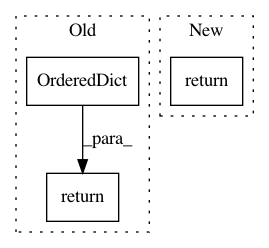

499ec5acc1d3672b7ed08297e232211f0ad8d390,ludwig/models/model.py,Model,train,#Model#Any#Any#Any#Any#Any#Any#Any#Any#Any#Any#Any#Any#Any#Any#Any#Any#Any#Any#Any#Any#Any#Any#Any#Any#Any#Any#Any#Any#,232
Before Change
// progress_tracker.vali_metrics,
// progress_tracker.test_metrics
// )
fake_metrics = OrderedDict([("y", OrderedDict([("loss", [9489.847173455057]),
("mean_squared_error", [9489.847173455057]),
("mean_absolute_error", [76.44962405086903]),
("r2", [0.00020098610875311863]),
("error", [-0.8305106002293275])])),
("combined", {"loss": [9489.847173455057], "accuracy": [0.0]})])
return (fake_metrics, fake_metrics, fake_metrics) // todo: tf2 debugging only
def train_online(
self,
After Change
// progress_tracker.test_metrics
// )
return (
progress_tracker.train_metrics,
progress_tracker.vali_metrics,
progress_tracker.test_metrics
)
def train_online(
self,
dataset,
In pattern: SUPERPATTERN
Frequency: 3
Non-data size: 3
Instances
Project Name: uber/ludwig
Commit Name: 499ec5acc1d3672b7ed08297e232211f0ad8d390
Time: 2020-03-19
Author: w4nderlust@gmail.com
File Name: ludwig/models/model.py
Class Name: Model
Method Name: train
Project Name: deepmind/sonnet
Commit Name: 4813caaade69050a44979ed878298e3ae89b08eb
Time: 2017-08-07
Author: noreply@google.com
File Name: sonnet/python/ops/nest.py
Class Name:
Method Name: _iterable_like
Project Name: williamFalcon/pytorch-lightning
Commit Name: 0e8ec93b28ecd86898b3668d48d346f510e95167
Time: 2021-01-06
Author: jspaezp@users.noreply.github.com
File Name: pl_examples/domain_templates/computer_vision_fine_tuning.py
Class Name: TransferLearningModel
Method Name: training_step